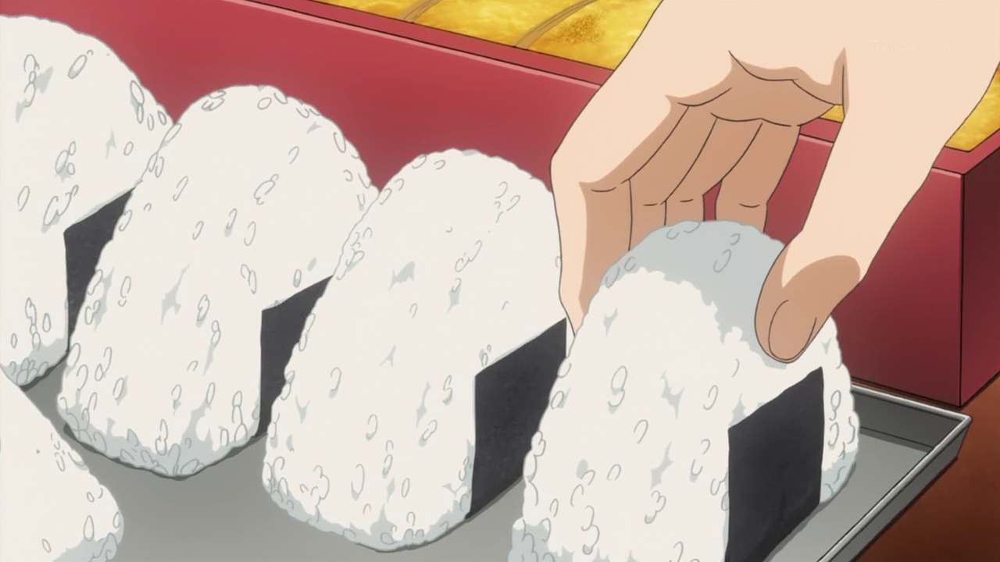

Onigiri

Description:
Before heading into work in Tokyo, I often stopped at a little stand where an elderly woman sold nothing but rice balls.
Onigiri is a quintessential Japanese food: made by moms for breakfast, lunch boxes, and picnics.
It is the ideal handheld food (the nori wrapper keeps the sticky rice from getting all over your hand).
Ingredients:
- 1 teaspoon salt
- 1 cup warm cooked rice
- 4 teaspoons cooked flaked fresh salmon or flaked canned salmon
- 2 sheets yakinori, halved
Steps:
- In a shallow bowl, dissolve the salt in 1 cup water. Dip your hands into the salted water, then grab 1/4 cup of the rice.
Using your hands, shape the rice into a small, fat triangle, then use your thumb to create an indentation in the center.
Place a teaspoonful of the salmon in the hollow, dampen your hands lightly again,
and pat the rice over the hollow to encase the salmon. Repeat to create 3 more rice balls.
- In a shallow bowl, dissolve the salt in 1 cup water. Dip your hands into the salted water, then grab 1/4 cup of the rice.
Using your hands, shape the rice into a small, fat triangle, then use your thumb to create an indentation in the center.
Place a teaspoonful of the salmon in the hollow, dampen your hands lightly again,
and pat the rice over the hollow to encase the salmon. Repeat to create 3 more rice balls.